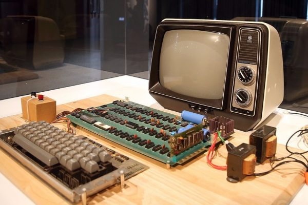

¿Que es un ordenador?
Máquina electrónica capaz de almacenar información y tratarla automáticamente mediante operaciones matemáticas y lógicas controladas por programas informátic
¿Cuando se invento el ordenador?
El primer ordenador mecánico, fue creado en el año 1822 por Charles Babbage. Pero que realmente no se parece a lo que la mayoría consideraría un ordenador hoy en día. Por lo tanto, hemos escrito este artículo con una lista de cada tipo de ordenador para los que usamos nosotros hoy en día.
siguiente 